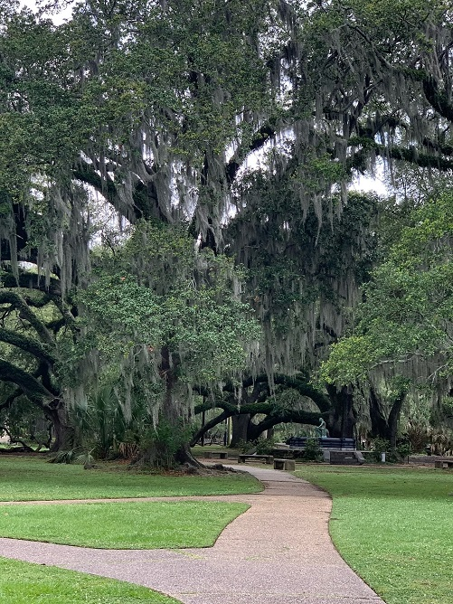

Explore with me!
Please stay ahwile and explore some of what my site has to offer.
About Me
Hey! My name is Chris Bray. I'm 23 years old and live in Arkansas, USA. I enjoy hiking, fishing, coding, and traveling (among other things). I'm married to my best friend and a step-father to a great kid. One thing about them is they also both share a love for travel. So this is where I will document all of our journies, close or far, as a way to look back and relive some dear memories.
Where we've been and where we have already planned to go.
Been
Planned